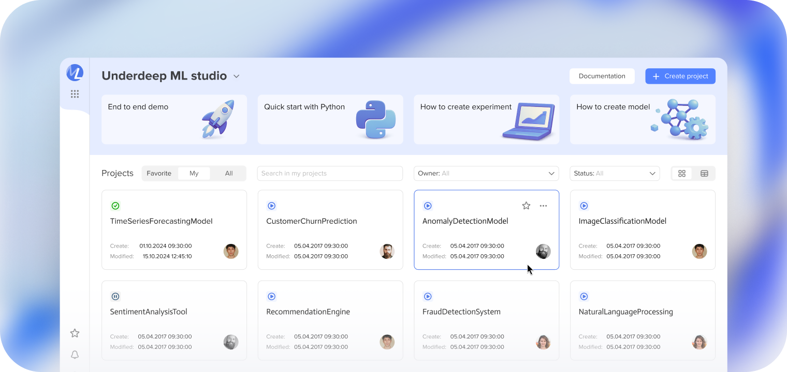
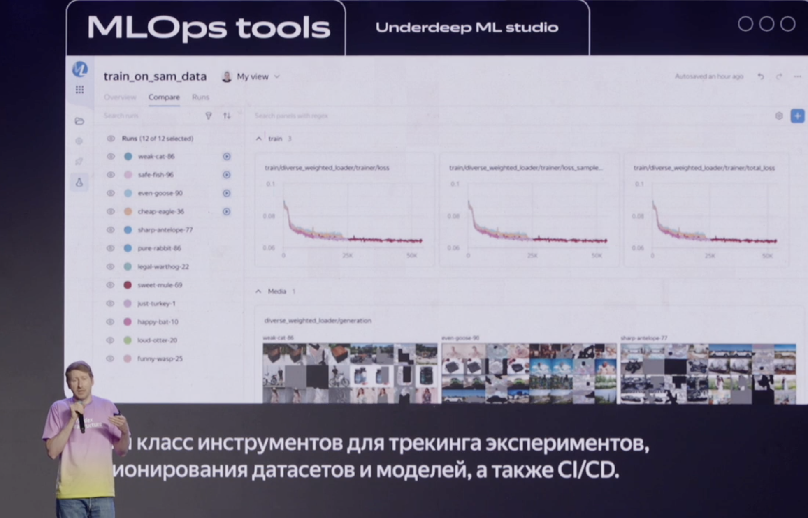

ML Platform
Designing an ML Platform for Data Scientists and ML Engineers. Building a unified system to replace fragmented ML tooling

Overview
Yandex is a large technology company operating a broad ecosystem of cloud and infrastructure products.
Within Yandex Cloud, multiple teams relied on fragmented third-party and internal tools to manage ML workflows — including experiment tracking, datasets, model artifacts, and compute resources.
This fragmentation slowed down experimentation, increased manual work, and made it difficult to scale ML development consistently across teams.
The goal was to design a unified ML platform from scratch that could gradually replace existing solutions and support the full ML lifecycle.
Context & Challenge
Before the platform:
- ML workflows were spread across multiple tools (TensorBoard, standalone scripts, ad-hoc dashboards)
- Experiment tracking satisfaction was low (2.1/5 in internal surveys)
- Many processes required manual coordination (e.g. requesting GPU machines via chat)
- Teams lacked a shared mental model of the ML lifecycle
This resulted in slow iteration, high cognitive load, and poor visibility across teams.
My Role
As the sole product designer, I was responsible for:
- Research and product discovery
- Defining user scenarios and platform structure
- Designing the UX architecture and core workflows
- Creating interactive prototypes for validation and stakeholder alignment
- Supporting implementation and gradual adoption by teams
Users
ML Engineers — managing infrastructure, experiments, and model deployment
Data Scientists — running experiments, comparing results, iterating on models
Team Leads / Managers — monitoring progress and experiment outcomes
Research & Strategy
Competitive analysis
I analyzed 6+ ML platforms, including:
- Amazon SageMaker
- Google Vertex AI
- Weights & Biases
Other open-source and internal solutions. The goal was not to copy features, but to understand how ML lifecycle stages are represented, which abstractions work at scale, and where existing tools create friction.
Defining core scenarios
Based on research and internal interviews, I defined key scenarios across the ML lifecycle:
- experiment tracking and comparison
- dataset and model management
- infrastructure provisioning for training
- collaboration and handoffs between roles
These scenarios became the foundation for the platform architecture.

Scalable platform structure
I designed a modular and expandable navigation system that supports future growth without restructuring the core:
- Functional grouping by lifecycle stage
- Clear separation between experiments, models, datasets, and compute
- Architecture designed to scale as new modules are added
This allowed the platform to grow incrementally while maintaining clarity.
Key Platform Modules
Experiment Manager
The first implemented and most actively used module.
- Centralized experiment tracking and comparison
- Clear visibility into metrics, runs, and results
- Designed to replace third-party tools such as TensorBoard
Impact:
- User satisfaction increased from 2.1 → 4.3
- Users actively migrated from external solutions
- ~ 730 weekly active users (WAU)
Model Registry & Dataset Registry
- Centralized storage and versioning of models and datasets
- Improved traceability across experiments
- Reduced manual coordination between teams
DevCluster
One of the most impactful features.
- Allows ML engineers to switch GPU-enabled virtual machines on the fly
- Eliminated the need to request infrastructure manually via chat
- Significantly reduced operational friction and waiting time
This module simplified multiple previously manual processes and improved day-to-day productivity.
Prototyping & Collaboration
- Built interactive Figma prototypes to validate concepts with users and executives
- Used prototypes to demonstrate platform value before full implementation
- Maintained structured Figma files to support efficient developer handoff
Design reviews and feedback loops were integrated into the development process.

Outcome
- Platform adopted by real product teams
- Gradual migration from third-party tools in progress
- Architecture supports new modules without core redesign
- Design-to-development workflow became more structured and predictable
- The platform continues to evolve as new ML workflows are added

Presenting the service at an external conference. View 8:48
All visuals and details are anonymized to comply with NDA requirements.